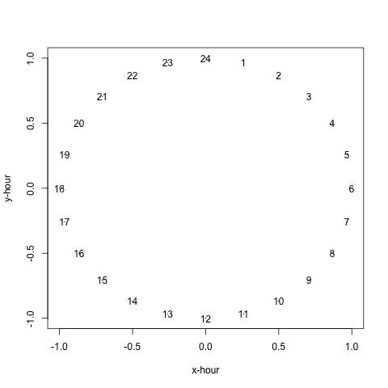
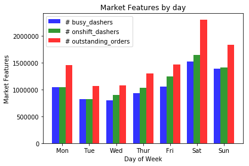
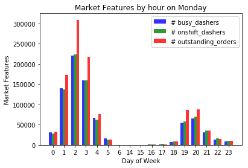
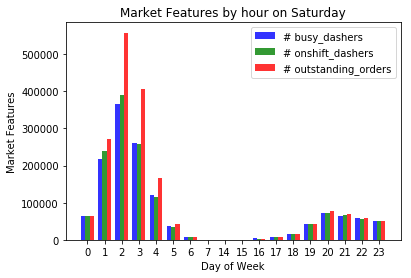
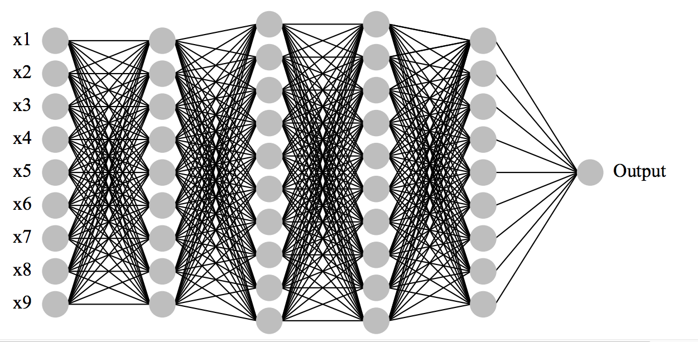

DoorDash Data Science Project
Table of Contents
1 A few thoughts
1.1 Overview
1.1.1 Objectives
Given a few categorical and numerical variables, predict the delivery time.
1.1.2 Datasets
- historical data
- test data
1.1.3 My approach
Due to time constraints, in this exercise, I don't strive for the best performing model but rather to demonstrate how I approach a data science problem. In other words, no attempts were made in carefully tuning the models. Heavy model tuning often lead to only incremental increase of model accuracy. Whereas, substantial accuracy gain are often resulted from better understanding of the problem, identifying the right features to collect, and designing models to represent the special structure/characteristics in data.
1.2 Challenges
1.2.1 Missing values
In the historical dataset, some variables have missing values. Note, throughout this report I use variables and features interchangeably.
total_onshift_dashers,total_busy_dashers, andtotal_outstanding_orders
These variables represent market features. Since the market feature of the same time, i.e. the same hour of the same day of week, should be reasonably consistent. To impute the missing values, I took the average of these variables from the same time.
estimated_store_to_consumer_driving_duration
This is the estimated travel time between store and consumer. Stores located at areas with heavy traffic may tend to have longer driving duration time, and vice versa. Therefore, I used the average of driving duration time of a store to fill in the missing driving duration times of the same store. Note, this may not be a good strategy to fill in the missing values since the driving time should also depend on the distance from a customer to a store. To determine the approach of engineering this feature, model performances should be compared between with and without imputing this variable.
store_primary_category
A store often offers one type of cuisine. Therefore, for each store, I take its most frequent category to fill in the missing values.
market_idandorder_protocol
Instead of imputing the missing values for these two variables, I chose to treat the missing values as an extra level of the categorical variables since the their possible values cannot be inferred from the other variables.
1.2.2 Feature engineering
- The cyclic nature of the feature
hour
Hour of day is an ordinal cyclic variables. It is inappropriate to treat this variable as numeric or ordinal.
Delivery time heavily depends on the hour of day, and
\begin{eqnarray*} x &=& \sin(2\pi\cdot hour/24)\\ y &=& \cos(2\pi\cdot hour/24) \end{eqnarray*}hourshould definitely be included as a feature. It is not ideal to treat hour as a numerical variable since delivery time at 1am should be similar to that at midnight (hour=24). If we treathouras a numerical variable, we implicitly assume the delivery time at 1am should be much similar to the delivery time at 2am than to the delivery time at midnight. To take care of cyclicity, I did the following trigonometric transformationAfter the transformation, the distance between 1am and 24:00 and the distance between 1am and 2am are the same. Hence, I replaced the variable
hourbyx-hourandy-hour. Note, even with deep learning, which doesn't require intensive feature engineering, these features are not likely to automatically emerge.
- Linear vs non-linear; additive vs. interactive
Linear assumption is inappropriate since the delivery time never linearly increase as the other variables (e.g.
week of day) increase.The additive assumption is also inappropriate since interactive effects, such as
week of dayandhour, clearly exist. - Random effects
Random effects models — also known as hierarchical models — allow us to ascribe distinct behaviors to different "clusters" of observations, e.g. markets (
market_id) may each act in a unique way. Furthermore, these models allow us to infer these tendencies in a collaborative fashion: while each market/cluster is assumed to behave differently, their parameters can be learned by heeding to the behavior of the population at large.Linear mixed effects model is a widely used model to incorporate the random effects. However, since this model is a linear model, we need to manually engineer the features to incorporate the non-linearity and interactions between features.
Neural networks are powerful function approximators and seem particularly suitable in this case to avoid the explicit feature engineering. Therefore, I also explored random effects models with deep neural network basis functions.
To my knowledge, there are no available algorithms to model the random effects while approximating basis functions by neural networks. Fortunately, Bayesian probabilistic models provide a nimble and expressive framework. Edward is a probabilistic programming library that enables easy implementation of Bayesian probabilistic/generative models. Moreover, Edward uses TensorFlow as backend and variational inference as the inference tool, which allows the implemented algorithms to scale to massive data. Given the time constraints, my initial attempt is only exploratory, and I didn't end up using this model for model serving.
2 EDA
2.1 Add some features
The delivery time may depend on which day of week and which hour of day. Therefore, I extracted week of day and hour of day from the variable created_at
2.1.1 Extract day of week and hour of day
import math from datetime import datetime import matplotlib.pyplot as plt import numpy as np import pandas as pd %matplotlib inline
Train = pd.read_csv('../../Data Science/historical_data.csv') Train.actual_delivery_time = \ pd.to_datetime(Train.actual_delivery_time) Train.created_at = pd.to_datetime(Train.created_at) Train['weekday'] = Train.created_at.map(lambda x: x.weekday()) Train['hour'] = Train.created_at.map(lambda x: x.hour)
2.1.2 Investigate the average market features for each day of a week and each hour of a day
- Market feature vary substantially from day to day
grouped_mean_day = Train.groupby('weekday').agg({ 'total_onshift_dashers': np.sum, 'total_busy_dashers': np.sum, 'total_outstanding_orders': np.sum }) # create plot fig, ax = plt.subplots() index = grouped_mean_day.index.values bar_width = 0.25 opacity = 0.8 rects1 = plt.bar( index, grouped_mean_day.total_busy_dashers, bar_width, alpha=opacity, color='b', label='# busy_dashers') rects2 = plt.bar( index + bar_width, grouped_mean_day.total_onshift_dashers, bar_width, alpha=opacity, color='g', label='# onshift_dashers') rects3 = plt.bar( index + 2 * bar_width, grouped_mean_day.total_outstanding_orders, bar_width, alpha=opacity, color='r', label='# outstanding_orders') plt.xlabel('Day of Week') plt.ylabel('Market Features') plt.title('Market Features by day') plt.xticks(index + bar_width, ('Mon', 'Tue', 'Wed', 'Thur', 'Fri', 'Sat', 'Sun')) plt.legend()
<matplotlib.legend.Legend at 0x1105cc350>

- Market feature vary substantially from hour to hour
Here I only show two days. The same pattern holds for the other days.
grouped_mean = Train.groupby(['weekday', 'hour']).agg({ 'total_onshift_dashers': np.sum, 'total_busy_dashers': np.sum, 'total_outstanding_orders': np.sum }) # define a function to make a plot for the market features of each hour # create plot def f_plot(which_day=0, day='Monday'): fig, ax = plt.subplots() index = np.arange(grouped_mean.loc[which_day].shape[0]) bar_width = .25 opacity = 0.8 rects1 = plt.bar( index, grouped_mean.loc[which_day].total_busy_dashers, bar_width, alpha=opacity, color='b', label='# busy_dashers') rects2 = plt.bar( index + bar_width, grouped_mean.loc[which_day].total_onshift_dashers, bar_width, alpha=opacity, color='g', label='# onshift_dashers') rects3 = plt.bar( index + 2 * bar_width, grouped_mean.loc[which_day].total_outstanding_orders, bar_width, alpha=opacity, color='r', label='# outstanding_orders') plt.xlabel('Day of Week') plt.ylabel('Market Features') plt.title('Market Features by hour on ' + day) plt.xticks(index + bar_width, grouped_mean.loc[which_day].index.values) plt.legend() f_plot(1, 'Monday')

f_plot(6, 'Saturday')

2.1.3 Hour of day
Hour of day is an ordinal cyclic variables. It is inappropriate to treat this variable as numeric or ordinal. We need to take care of cyclicity. Thus we do the following trigonometric transformation
\begin{eqnarray*} x &=& \sin(2\pi\cdot hour/24)\\ y &=& \cos(2\pi\cdot hour/24) \end{eqnarray*}
After the transformation, the distance between 1am and 24:00 and the distance between 1am and 2am are the same. Hence, we replace the variable hour by x-hour and y-hour.
def hour_x(hour): return math.sin(2 * math.pi * hour / 24) def hour_y(hour): return math.cos(2 * math.pi * hour / 24) Train['hour_x'] = Train.hour.map(hour_x) Train['hour_y'] = Train.hour.map(hour_y)
2.2 Missing values
2.2.1 Count the number of missing values for each column
Train.isnull().sum()
market_id 987 created_at 0 actual_delivery_time 7 store_id 0 store_primary_category 4760 order_protocol 995 total_items 0 subtotal 0 num_distinct_items 0 min_item_price 0 max_item_price 0 total_onshift_dashers 16262 total_busy_dashers 16262 total_outstanding_orders 16262 estimated_order_place_duration 0 estimated_store_to_consumer_driving_duration 526 weekday 0 hour 0 hour_x 0 hour_y 0 dtype: int64
2.2.2 Impute the missing values for some columns
- For
total_onshift_dashers,total_busy_dashers, andtotal_outstanding_orders, replace the missing values by the corresponding average from the same hour of day and the same day of week
cols = [ 'total_onshift_dashers', 'total_busy_dashers', 'total_outstanding_orders' ] grouped_mean = Train.groupby(['weekday', 'hour']).agg({ 'total_onshift_dashers': np.mean, 'total_busy_dashers': np.mean, 'total_outstanding_orders': np.mean }) Train_merge = Train.reset_index().join( grouped_mean, on=['weekday', 'hour'], lsuffix='_x', rsuffix='_y') Train.loc[Train.loc[:,cols].isnull().any(axis=1).tolist(), cols] =\ Train_merge.loc[Train.loc[:, cols].isnull().any(axis=1).tolist(), [c+'_y' for c in cols]].values
- For
estimated_store_to_consumer_driving_duration, replace the missing values by the average from the same store
grouped_mean_store = Train.groupby('store_id').agg({ 'estimated_store_to_consumer_driving_duration': np.mean }) Train_merge_store = Train.reset_index().join( grouped_mean_store, on='store_id', lsuffix='_x', rsuffix='_y') Train.loc[Train.loc[:,'estimated_store_to_consumer_driving_duration']\ .isnull().tolist(), 'estimated_store_to_consumer_driving_duration'] =\ Train_merge_store.loc[Train.loc[:, 'estimated_store_to_consumer_driving_duration'].isnull().tolist(), 'estimated_store_to_consumer_driving_duration'+'_y'] # remove the only data point that has NaN for # estimated_store_to_consumer_driving_duration. Note, this store only has this # one record Train = Train[~Train.estimated_store_to_consumer_driving_duration.isnull()]
- Use the majority of the
store_primary_categoryof a store to replace the missing values
Train.isnull().sum() group_maj_categ = Train.groupby('store_id').\ agg({'store_primary_category': lambda x: np.nan if len(pd.value_counts(x)) == 0 else pd.value_counts(x).idxmax()}) Train_merge_store = Train.reset_index().join( group_maj_categ, on='store_id', lsuffix='_x', rsuffix='_y') Train.isnull().sum() Train_merge_store.isnull().sum() Train.loc[Train.loc[:,'store_primary_category']\ .isnull().tolist(), 'store_primary_category'] =\ Train_merge_store.loc[Train.loc[:, 'store_primary_category'].isnull().tolist(), 'store_primary_category_y']
2.2.3 Treat the NaN as an extra level of the categorical variable
For the NaN's in market_id and order_protocol, and the remaining NaN's in store_primary_category_x, I treat them as a special level of these categorical variables
2.3 Compute the duration from orders created to orders delivered
Train['duration'] = (Train['actual_delivery_time'] - Train['created_at']).map(lambda x: x.seconds) Train.drop(['actual_delivery_time','created_at', 'hour'], axis=1, inplace=True) Train.to_csv('./data/data.csv', index=False)
3 Training
3.1 Automatic Machine Learnig (AutoML)
In recent years a number of AutoML have been developed. H2O offers an easy-to-use AutoML package. The AutoML tools significantly reduce the effort on model implementation when exploring different models. Data scientist just need to specify the models to be included, and then these models will be automatically tuned and evaluated. Keep in mind, AutoML is suitable for the initial model exploration but not for getting the best performing model. Once an appropriate model family is identified, further tuning is still required.
import h2o from h2o.automl import H2OAutoML train = pd.read_csv('./data/data.csv') train.market_id = train.market_id.astype("str") train.order_protocol = train.order_protocol.astype("str") h2o.init() train = h2o.H2OFrame(train) x = train.columns x.remove('actual_delivery_time') x.remove('created_at') y = 'duration' x.remove(y) # Run AutoML for 30 seconds aml = H2OAutoML(max_runtime_secs=30) aml.train(x=x, y=y, training_frame=train) # View the AutoML Leaderboard lb = aml.leaderboard
- Model comparison
As indicated by the following table, the best performing model is an ensemble model. This is a stacked ensemble model. Its algorithm can be found here. In short, stacked ensemble learning is a class of algorithms that involves training a second-level “metalearner” to find the optimal combination of the base learners. Unlike bagging and boosting, the goal in stacking is to ensemble strong, diverse sets of learners together.
I will use StackedEnsemble_BestOfFamily as the model for servnig.
| modelid | meanresidualdeviance | rmse | mae | rmsle |
|---|---|---|---|---|
| StackedEnsembleAllModels0AutoML20180731024402 | 948309 | 973.812 | 625.31 | 0.281234 |
| StackedEnsembleBestOfFamily0AutoML20180731024402 | 954067 | 976.764 | 626.901 | 0.281996 |
| GBMgrid0AutoML20180731024402model4 | 973542 | 986.682 | 636.629 | 0.286368 |
| GBMgrid0AutoML20180731024402model2 | 981859 | 990.888 | 641.478 | 0.288185 |
| GBMgrid0AutoML20180731024402model1 | 982456 | 991.189 | 641.57 | 0.288078 |
| GBMgrid0AutoML20180731024402model3 | 982967 | 991.447 | 641.205 | 0.288238 |
| DeepLearning0AutoML20180731024402 | 987368 | 993.664 | 640.402 | 0.28797 |
| GBMgrid0AutoML20180731024402model0 | 990865 | 995.422 | 646.579 | 0.290066 |
| DRF0AutoML20180731024402 | 1.05269e+06 | 1026.01 | 674.232 | 0.302125 |
| XRT0AutoML20180731024402 | 1.06259e+06 | 1030.82 | 679.858 | 0.304129 |
3.2 Mixed effects model
A generalized mixed effects model (GLMM) is represented as:
\begin{equation*} g(\mu_{ij}) = x_{ij} \beta + z_{ij}b_i \end{equation*}where g(·) is a monotonic “link” function, xij is 1 × p, and zij is 1 × q, with β a p × 1 vector of fixed effects and bi a q × 1 v ector of random effects
If we were to apply conventional GLMM, we would need to transform a vector of p raw covariates X = (X1, …, Xp)T in the following way
\begin{equation*} φ(X) = (φ_1(X), ..., φ_m(X)) \end{equation*}Usually in conventional GLMM, \(φ_j (X)\) are chosen a priori in some way. But here we are concerned with learning an appropriate \(φ_j (X)\) from data. If a deep multi-layer perceptron is used for transforming the covariates, then Z has the form
\begin{equation*} f_L(W_L,f_{L-1}(W_{L-1},\cdots,f_1(W_1,X)\cdots)) \end{equation*}which is often graphically represented by a network as in the following figure  \(L\) is the number of hidden layers in the network, \(w=(W_1,...,W_L)\) is the set of weights
import matplotlib.pyplot as plt import numpy as np import pandas as pd import tensorflow as tf from keras import backend as K from keras.layers import Dense, Input from keras.regularizers import l2 from mpl_toolkits.mplot3d import Axes3D from sklearn.preprocessing import scale import edward as ed from edward.models import Normal def neural_network(fixed_effects, lamd=.1, input_dim=None): dense = Dense( 5, activation='tanh', kernel_regularizer=l2(lamd))(fixed_effects) output = Dense( 1, activation='linear', name='output', kernel_regularizer=l2(lamd))(dense) return K.squeeze(output, axis=1) sess = ed.get_session() K.set_session(sess) INIT_OP = tf.global_variables_initializer() data = pd.read_csv('~/Dropbox/Quantiply/playground/data.csv') fixed_effect_predictors = [ 'total_items', 'subtotal', 'num_distinct_items', 'min_item_price', 'max_item_price', 'total_onshift_dashers', 'total_busy_dashers', 'total_outstanding_orders', 'estimated_order_place_duration', 'estimated_store_to_consumer_driving_duration', 'hour_x', 'hour_y' ] zip_codes = data['market_id'].astype('category').cat.codes + 1 # zip_codes.value_counts() train_index = data.sample(frac=0.7).index val_index = data.drop(train_index).index X = data.drop('duration', axis=1)[fixed_effect_predictors] X = scale(X) y = data['duration'].values X_train = X[train_index] y_train = y[train_index] X_val = X[val_index] y_val = y[val_index] N, D = X_train.shape # fixed-effects placeholders fixed_effects = tf.placeholder(tf.float32, [N, D]) # fixed-effects parameters b_fixed_effects = Normal(loc=tf.zeros(D), scale=tf.ones(D)) a = Normal(loc=tf.zeros(1), scale=tf.ones(1)) # approximate fixed-effects distributions qb_fixed_effects = Normal( loc=tf.Variable(tf.random_normal([D])), scale=tf.nn.softplus(tf.Variable(tf.random_normal([D])))) qa = Normal( loc=tf.Variable(tf.random_normal([1])), scale=tf.nn.softplus(tf.Variable(tf.random_normal([1])))) n_zip_codes = len(set(zip_codes)) # random-effect placeholder zip_codes_ph = tf.placeholder(tf.int32, [N]) # random-effect parameter sigm_zip_code = tf.sqrt(tf.exp(tf.Variable(tf.random_normal([])))) a_zip_code = Normal( loc=tf.zeros(n_zip_codes), scale=sigm_zip_code * tf.ones(n_zip_codes)) # approximate random-effect distribution qa_zip_code = Normal( loc=tf.Variable(tf.random_normal([n_zip_codes])), scale=tf.nn.softplus(tf.Variable(tf.random_normal([n_zip_codes])))) a_random_effects = tf.gather(a_zip_code, zip_codes_ph) # ### Infer parameters # model fixed_effects = tf.placeholder(tf.float32, [N, D]) mu_y = a + a_random_effects + neural_network(fixed_effects) y = Normal(loc=mu_y, scale=tf.ones(N)) latent_vars = { b_fixed_effects: qb_fixed_effects, a: qa, a_zip_code: qa_zip_code } # Inference sess.run(INIT_OP) inference = ed.KLqp( latent_vars, data={ fixed_effects: X_train, zip_codes_ph: zip_codes[train_index], y: y_train }) optimizer = tf.train.RMSPropOptimizer(0.01, epsilon=1.0) inference.initialize(optimizer=optimizer) inference.run(n_samples=5, n_iter=1000)
4 Prediction
4.1 Script for model serving
For the neural network based mixed effects model, since it is implemented in tensorflow, it can be served via tf.serving. A few advantages of tf.serving are:
- Scales to massive data.
- Supports online learning.
- Supports batch training.
The script I will use for model serving is shown below. If I had more time, I would have built a docker container for portability.
import argparse import math import os import h2o import pandas as pd parser = argparse.ArgumentParser() parser.add_argument("--input_path", default=None) parser.add_argument("--model_path", default=None) parser.add_argument("--output_path", default=None) ms = parser.parse_args() if ms.input_path is None: raise ValueError('Please provide the path of your input data.') if ms.model_path is None: raise ValueError('Please provide the path of the model file.') if ms.output_path is None: raise ValueError('Please provide the path to save the results.') if os.path.isdir(ms.input_path): raise IOError('Provided input path is a directory. \ Please provide the path to the data file.') if os.path.isdir(ms.model_path): raise IOError('Provided model path is a directory. \ Please provide the path to the model file.') if os.path.isdir(ms.output_path): raise IOError('Provided output path is a directory.\ Please specify the file path to store the results.') # Initialize h2o h2o.init() # define functions to engineer the feature hour def hour_x(hour): return math.sin(2 * math.pi * hour / 24) def hour_y(hour): return math.cos(2 * math.pi * hour / 24) def prepare_test_data(input_path=ms.input_path): '''Prepare the test dataset Parameters ---------- input_path: str Path to the saved input data. Returns ------- test: H2O.DataFrame Test dataset after the same feature engineering. ''' # jason_path = '../../Data Science/data_to_predict.json' # test = pd.read_json(jason_path, lines = True) test = pd.read_json(input_path, lines=True) print 'Using input data from %s' % input_path # Engineer the features of test data accordingly test.created_at = pd.to_datetime(test.created_at) test['weekday'] = test.created_at.map(lambda x: x.weekday()) test['hour'] = test.created_at.map(lambda x: x.hour) test['hour_x'] = test.hour.map(hour_x) test['hour_y'] = test.hour.map(hour_y) test = h2o.H2OFrame(test) return test def predict(model_path=ms.model_path, output_path=ms.output_path): '''Make predictions Parameters ---------- model_path: str Path to the saved model file. output_path: str Path to save the results. Returns ------- None ''' # load the saved model aml_top = h2o.load_model(model_path) # make predictions test = prepare_test_data() pred = aml_top.predict(test) res = pd.DataFrame() res['delivery_id'] = test.as_data_frame()['delivery_id'] res['predicted_delivery_seconds'] = pred.as_data_frame()['predict'] res.to_csv(output_path, sep='\t', index=False) if __name__ == "__main__": predict() h2o.cluster().shutdown() print 'Saving results to %s' % ms.output_path